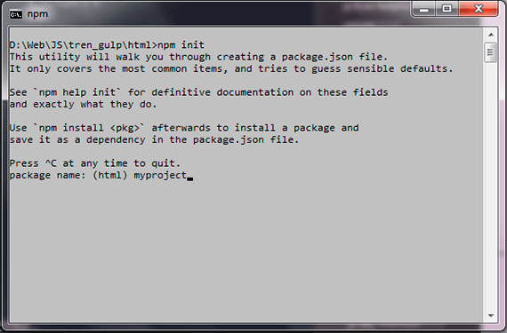
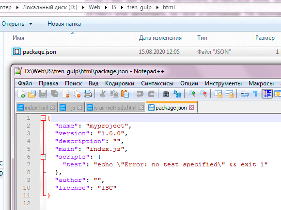
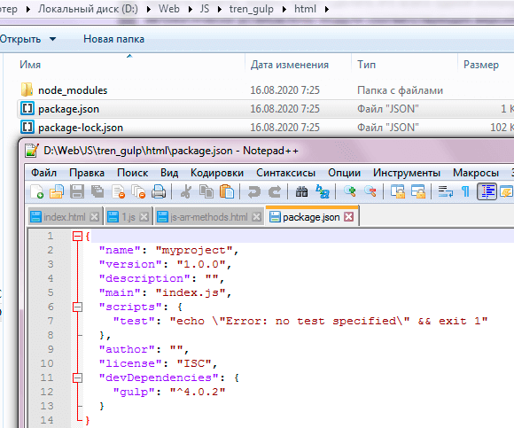
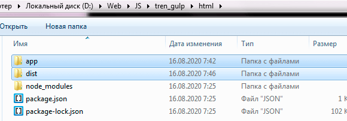

Качаем node.js отсюда - ссылка.
После того как утсановили, проверяем нормально ли запускается наш node. Для этого либо в поиске, либо через Win + R вводим cmd или powershell и в запустившейся командной строке пишем node -v. Должен выдать версию. Также проверяем наш пакетный менеджер - npm -v.
Чтобы выполнить наш файл js в интерпритаторе node.js, нужно прописать путь до папки с файлами js в cmd, ну или открыть папку в cmd. Это можно сделать выбрав нашу папку и при зажатом Shift нажать правую клавишу мыши. Папка откроется в cmd и запускаем наш файл, например - node 1.js
Npm это секретарь, который знает где лежит какой пакет и может загрузить его. Это управляющий состоит из сайтаб реестра(база данных пакетов и cli). Сайт npm это ссылка. На сайте в поиске ищем какой нибудь пакет и сайт выдаст страницу, на которой будет вся информация о пакете. Ну и cli это набор команд в cmd с помощью которых наш менеджер скачает пакет, например, npm i vue-material
Оф. сайт gulp тут, там же и команды.
Для начала установим gulp cli глобально в наш проект командой:
npm i gulp-cli --global
Теперь cоздадим папку, например, «html» на нашем компьютере и откроем в ней терминал. Выполним инициализацию проекта командой npm init и укажем название нашего проекта myproject:
Если нет желания заполнять остальные поля, можно оставить их пустыми, нажимая «Enter» или заполнить на своё усмотрение. По окончании заполнения полей, вводим yes и нажмимаем «Enter».
Проект создан. У нас появился файл «package.json». Это файл манифеста нашего нового проекта, который, помимо той информации, что мы указали в терминале, содержит также информацию о используемых в нашем проекте пакетах и их версиях. Если в дальнейшем нам необходимо будет заново установить все используемые в проекте пакеты, можно будет сделать это всего одной командой npm i. В проект будут автоматически установлены модули соответствующих версий:
Теперь нужно установить gulp локально в наш проект:
npm i gulp --save-dev
Если вы хотите, чтобы ваши зависимости были отражены в секции devDependencies манифеста, нужно обязательно указывать ключ --save-dev. В секцию devDependencies устанавливаются пакеты , которые нужны для разработки проекта. В секцую dependencies устанавливают пакеты, которые нужны для работы пакета уже в готовом продукте.
Теперь в файле package.json, в секции devDependencies появился gulp и информация о его текущей версии. После установки других пакетов таким-же образом, информация о них также будет отражена в «package.json». Кроме того, в папке нашего проекта появилась папка «node_modules», которая теперь содержит все зависимости пакета «gulp». Именно в эту папку будут автоматически установлены все модули и из зависимости, которые мы будем использовать в нашем проекте. В папке проекта таже можно заметить файл «package-lock.json». Это служебный файл, на который можно не обращать внимание.
Для файлов нашего проекта я предлагаю создать папку «app/», в которой будут храниться все исходные файлы. Создадим папку «dist/», в которую будет выгружен готовый билд проекта. Если вы работаете с какой-либо CMS или фреймворком, папка «dist/» вам, в принципе и не нужна. В своих проектах я не делаю сборку, потому, что всё, что нужно для посадки, как правило, уже собрано в папке «app/» и готово к дальнейшей работе. В стартере OptimizedHTML 5 мы не используем возможности билда проекта, в этом нет необходимости. В данном уроке сборка проекта, всё-таки будет показана для наглядного примера, чтобы вы понимали как это происходит в других проектах. Итак, папка «app/» - это исходники, «dist/» - это готовый, собранный проект.
В папке app/ создадим index.html, папку scss, в этой папке создадим style.scss. Также в папке app создадим папку img, fonts при необходимости, затем создадим папку js, а в ней файл main.js. В index.html мы как обычно создадим каркас и подключим пока ещё не существующие css и js.
Сила gulp заключается в его плагинах, они находятся тут. У каждого плагина свои задачи, кто то конвертирует scss в css, кто то сжимает картинки, кто то минифицирует код и т.д. Для работы нам нужен плагин gulp-sass, на сайте его можно вбить в поиск и найти, затем щёлкаем по нему и нас переносит на страницу npm, где и показана команда, как установить этот плагин. Давайте установим наш плагин:
npm install gulp-sass --save-dev
Для начала определим константы Gulp в «gulpfile.js»:
// Определяем константы Gulp
let { src, dest, parallel, series, watch } = require('gulp');
или
let gulp = require('gulp');
Именно с помощью require() мы подключаем модули из папки «node_modules» и присваиваем их переменной или, как в нашем случае, константам.
Ранее мы установили плагин sass, тепрь его надо как то настроить, чтобы он переводился в файл css. Для этого напишем такую строчку, выделенную зелёным:
let gulp = require('gulp');
let sass = require('gulp-sass');
Теперь нужно установит задачу для sass. У галпа есть такой метод, как task(), пишем его:
let gulp = require('gulp');
let sass = require('gulp-sass');
gulp.task('scss', function(){
};)
Первый аргумент у этого метода это имя задачи, так как мы будем переводить файл scss в css, то логично назвать задачу scss, второй аргумент это функция, которая и будет выполнять задачу. Чтобы переводить файлы, нужно их найти, для этого у галпа есть такой метод как src(), куда указывается путь до наших файлов scss, затем пишем метод pipe(), чтобы метод pipe() начал перегонку файлов, ему нужно выполнить плагин gulp-sass, поэтому в аргумете пишем sass() и затем пишем ещё раз метод pipe() и указываем там метод gulp.dest(), который уже перегнаные файлы слаживает в папку app/css:
let gulp = require('gulp');
let sass = require('gulp-sass');
gulp.task('scss', function(){
return gulp.src('app/scss/*.scss).pipe(sass()).pipe(gulp.dest('app/css'));
};)
Чтобы проверить, работает наша задача или нет, давайте напишем какие нибудь свойства в файле style.scss и в терминале пропишем название нашего таска - scss:
gulp scss
Если всё прошло успешно, то в папке app появится папка css, а в ней появится файл style.css. Если посмотреть файл style.css, то увидим немного не привычный стиль написания свойств и их значений, это можно изменить в настройках. Чтобы сразу минифицировать стили, нужно добавить в pipe(sass()) такую настройку - {outputStyle: 'compressed'}:
let gulp = require('gulp');
let sass = require('gulp-sass');
gulp.task('scss', function(){
return gulp.src('app/scss/*.scss).pipe(sass({outputStyle: 'compressed'})).pipe(gulp.dest('app/css'));
};)
Но для этого уже нужно переименовать наш style.css в style.min.css. Если же мы пока не хотим минифицировать код, а просто выводить привычный нам css, то compressed заменяем на expanded
let gulp = require('gulp');
let sass = require('gulp-sass');
gulp.task('scss', function(){
return gulp.src('app/scss/*.scss).pipe(sass({outputStyle: 'expanded'})).pipe(gulp.dest('app/css'));
};)
Если мы всё же минифицируем css, то есть плагин, который автоматически переименует наш .css в min.css, он называется gulp-rename. Установим его - npm i gulp-rename --save-dev. Объявим для него переменную и подключим, затем если выбран флаг "compressed", то после него добавим ещё один метод pipe() вот такой:
let gulp = require('gulp');
let sass = require('gulp-sass');
let rename = required('gulp-rename');
gulp.task('scss', function(){
return gulp.src('app/scss/*.scss)
.pipe(sass({outputStyle: 'compressed'}))
.pipe(rename({suffix: '.min'}))
.pipe(gulp.dest('app/css'));
};)
Также сюда нужно написать ещё один pipe() чтобы при работе плагина browser-sync всё работало хорошо:
let gulp = require('gulp');
let sass = require('gulp-sass');
gulp.task('scss', function(){
return gulp.src('app/scss/*.scss)
.pipe(sass({outputStyle: 'expanded'}))
.pipe(gulp.dest('app/css'))
.pipe(browserSync.reload({stream: true}));
};)
Чтобы всё время самому не сапускать задачу, есть есть специальные watch задачи, которые отслеживают изменения в файлах и запускают задачу на перевод.
let gulp = require('gulp');
let sass = require('gulp-sass');
gulp.task('scss', function(){
return gulp.src('app/scss/*.scss).pipe(sass({outputStyle: 'expanded'})).pipe(gulp.dest('app/css'));
};)
gulp.task('watch', function(){
gulp.watch('app/scss/*.scss', gulp.parallel('scss'))
});
То есть когда gulp.watch() заметит изменения в файлах, то запустит задачу gulp.parallel('scss') с имененм scss. Теперь чтобы запустить задачу наблюдать, запускаем:
gulp watch
На это по плагину sass пока всё, далее мы установим плагин для автоматического обновления содержимого браузера.
Установим Live Server, который позволит нам использовать возможности локального сервера и автоматически обновлять страницы при изменениях в файлах. Лучшее решение - плагин browsersync. Давайте его установим командой:
npm i browser-sync --save-dev
Подключим browsersync в проект:
let browserSync = require('browser-sync');
Далее напишем функцию, которая определит логику работы «Browsersync».
gulp.task('browser-sync', function(){
browserSync.init({
server: {
baseDir: "app"
}
})
});
также нам надо написать дефолтную задачу:
gulp.task('default', gulp.parallel('browser-sync', 'watch'));
Эта задача говорит о том, что если в консоли написать просто слово gulp, то должна запустится вот эта дефолтная задача, которая в свою очеред запустит все остальные.
Итак запустим команду gulp и должно всё заработать, в консоли нам напишут по какому адресу в браузере открылся наш сайт, но ниже на следующей строке показан адресс, на который мы можем по вай фаю перейти на телефоне или планшете, вот такой вот адрес External: http://192.168.1.160:3000
Сейчас у нас отслеживается только файлы css, но нужно ещё отслеживать js и html. Давайте начнём с html и напишем под него новую задачу:
gulp.task('html', function(){
return gulp.src('app/*.html')
.pipe(browserSync.reload({stream: true}));
});
И эту задачу также нужно ослеживать, поэтому пропишем её в watch:
gulp.task('watch', function(){
gulp.watch('app/scss/*.scss', gulp.parallel('scss'));
gulp.watch('app/*.html', gulp.parallel('html'));
});
Запустим опять команду gulp и проверим как автоматом обновляется страница при изменении index.html
Например чтобы подключить jquery или файл normolize.css, нужно просто помнить найзвание, дальше заходим на сайт nmp и в поиске вводим это название. Нам найдётся этот файл и там же покажут команду как этот файл подключить, например у этого файл команда:
npm install normalize.css --save
Или например надо скачать slick-slider, то искать его на npm нужно по названию slick-carousel.
Или например для popup окон есть плагин magnific-popup
Мы решили их себе закачать, можно сразу все 3 скачать командой:
npm i normalize.css slick-carousel magnific-popup
Теперь после того как они скачаются нам нужно будет объединить все файлы css в один css. Для этого перейдём в файл style.scss и там импортируем остальные css в него
@import "../../node_modules/normalize.css/normalize";
@import "../../node_modules/slick-carousel/slick/slick"; - но здесь есть маленькая засада, если пройти по этому пути, то мы увидим там 2 файла, slick.css и slick.scss, программа сама не сможет выбрать какой файл выбрать и выдаст ошибку, поэтому удалим slick.scss
@import "../../node_modules/magnific-popup/dist/magnific-popup";
Все импортируемые файлы css указываются без расширения .css на конце
Далее запустим команду gulp scss и увидим что все файлы подключились в один style.css
Теперь нам нужно объединить js файлы и сразу их минифицировать, для этого будем использовать 2 плагина - gulp-uglify и gulp-concat. Как обычно идём на npm и скачиваем их оттуда. После скачивания идём в файл gulpfile.js и там добавляем 2 переменные:
let uglify = require('gulp-uglify');
let concat = require('gulp-concat');
И напишем задачу, которую назовём js, так как нам нужно указать несколько путей до js файлов, которые нужно объединить, то указываются квадратные скобки:
gulp.task('js', function(){
return gulp.src([
'node_modules/slick-carousel/slick/slick.js',
'node_modules/magnific-popup/dist/jquery.magnific-popup.js'
])
.pipe(concat('libs.min.js'))
.pipe(uglify())
.pipe(gulp.dest('app/js'))
.pipe(browserSync.reload({stream: true}));
});
Ну и пробуем потестить, запустив команду gulp js. Должно всё сработать, ну и добавим наши js файлы на отслеживание:
gulp.task('watch', function(){
gulp.watch('app/scss/*.scss', gulp.parallel('scss'));
gulp.watch('app/*.html', gulp.parallel('html'));
gulp.watch('app/js/*.js', gulp.parallel('js'));
});
Но у нас ещё нет задачи, которая будет перезапускать сервер, если изменился main.js, отслеживание то идёт js файлов, но исполняется только задача на конкатенацию и всё. Давайте напишем для main.js:
gulp.task('mainjs', function(){
return gulp.src('app/js/*.js')
.pipe(browserSync.reload({stream: true}));
});
ну и добавим в отслеживание эту задачу:
gulp.task('watch', function(){
gulp.watch('app/scss/*.scss', gulp.parallel('scss'));
gulp.watch('app/*.html', gulp.parallel('html'));
gulp.watch('app/js/*.js',gulp.parallel('mainjs'));
});
Это вторая часть предыдущего видео, тут мы допиливаем сборку gulp для вёрстки.
Создадим функцию scripts() до экспорта задач. Данная функция будет обрабатывать скрипты нашего проекта:
function scripts() {
return src([ // Берём файлы из источников
'node_modules/jquery/dist/jquery.min.js', // Пример подключения библиотеки
'app/js/app.js', // Пользовательские скрипты, использующие библиотеку, должны быть подключены в конце
])
.pipe(concat('app.min.js')) // Конкатенируем в один файл
.pipe(uglify()) // Сжимаем JavaScript
.pipe(dest('app/js/')) // Выгружаем готовый файл в папку назначения
.pipe(browserSync.stream()) // Триггерим Browsersync для обновления страницы
}
Для работы данной функции нам понадобятся модули «gulp-concat» и «gulp-uglify-es». Установим их в наш проект. Устанавливать несколько пакетов можно простым перечислением без каких-либо разделяющих символов одной командой:
npm i gulp-concat gulp-uglify-es --save-dev
И подключим данные модули к проекту в верхней части «gulpfile.js»:
// Определяем константы Gulp
const { src, dest, parallel, series, watch } = require('gulp');
// Подключаем Browsersync
const browserSync = require('browser-sync').create();
// Подключаем gulp-concat
const concat = require('gulp-concat');
// Подключаем gulp-uglify-es
const uglify = require('gulp-uglify-es').default;
Создадим в папке «app/» новую папку «js/» и в ней уже создадим новый файл «app.js». Для примера можно разместить следующий код в файле «app.js»:
$(document).ready(function() {
// $('body').hide()
})
Давайте разберёмся, что происходит в функции scripts() нашего «gulpfile.js». Я буду указывать соответствующую строку кода из примера выше и объяснять, что мы делаем.
Строка 1: Создаём функцию scripts()
Строка 2: Возвращаем через return и тут-же открываем источник посредством src для объекта Vinyl.
Строки 3 и 4: Перечисление нескольких файлов в качестве источника.
Внимание! В строке 3 мы подключаем jQuery из модулей. Его, соответственно, также нужно установить командой npm i jquery --save-dev
Имейте ввиду, что подключение пользовательских скриптов, в которых могут быть использованы какие-либо JS библиотеки, нужно размещать после подключения библиотек в потоке, так как в процессе конкатенации файлы сливаются именно в той последовательности, в которой перечисляются пути до файлов в src, а подключение API библиотеки должно предшествовать использованию.
Строка 6: Конкатенация (слияние) содержимого перечисленных выше файлов в один виртуальный. Здесь мы должны указать название результирующего файла, в нашем случае это «app.min.js». Для удобства каждый новый вызов .pipe() рекомендую писать с новой строки. Так как concat не является частью Gulp, его можно установить дополнительно, как и другие дополнительные модули командой npm i gulp-concat --save-dev и подключить к проекту в верхней части «gulpfile.js» (мы это уже сделали выше).
Строка 7: Сжатие скриптов посредством модуля «gulp-uglify-es», который мы установили и подключили ранее, вместе с «gulp-concat». Обратите внимание, что данный модуль необходимо подключать с параметром .default в конце:
Строка 8: Выгрузка результирующего файла в указанную директорию посредством dest().
Строка 9: Вызываем Browsersync для перезагрузки страницы. .stream() используется для инъекции в код, без hard reload, однако в данном случае произойдёт именно перезагрузка страницы, так как Browsersync знает, что это лучший вариант для работы со скриптами. Если мы работаем со стилями, например, жёсткая перезагрузка не обязательна и Browsersync просо подставит новый код в браузере, без перезагрузки страницы
Далее экспортируем функцию scripts() в таск. В нижней части «gulpfile.js», где у нас размещён предыдущий экспорт, добавляем экспорт таска scripts: